04 · Aktorik & Sicherheit
Mikrocomputertechnik 3 · Hardware-PWM und überwachte Abläufe
Prof. Dr.-Ing. Daniel Klünder
Von Ereignissen zu Ausgaben
- Vorlesung 3: Zeitquelle, Termine und Interruptbehandlung
- Heute: Licht, Bewegung und andere physikalische Wirkungen
- Ein Timer erzeugt ein Signal; eine Treiberstufe liefert Leistung
- Ein Watchdog überwacht einen vereinbarten Fortschrittsnachweis
Voraussetzungen und unser Timer-Modell
- Geräteadressen, C-Zeiger und Timer-Ticks aus Vorlesung 3
- GPT: General Purpose Timer, Peripheriezähler
- Up-Counting:
CNT läuft von \(0\) bis einschließlich ARR
- Vorteiler
PSC+1; Active-High, solange CNT < CCR
- Diese Registerkonvention ist ein Lehrmodell, kein RISC-V-Standard
Vier Schulstunden: Ablauf
| 1 |
Timer und PWM-Grundlagen: 35 min |
Aufgabe 1: 10 min |
| 2 |
Signale und Aktualisierung: 30 min |
Aufgaben 2–3: 15 min |
| 3 |
Anwendungen und Überwachung: 30 min |
Aufgabe 4: 15 min |
| 4 |
Watchdog und Ausgangszustand: 15 min |
Aufgaben 5–6: 15 min; Quiz: 15 min |
Systemzeit ist nicht PWM-Träger
mtime: Zeitquelle für Softwareterminemtimecmp: Zeitpunkt einer Timeranforderung- Peripherietimer: wiederkehrende Flanken am Ausgang
- PWM-Träger und Änderungsrate eines Sollwerts unterscheiden
Steuerpfad und Leistungsweg
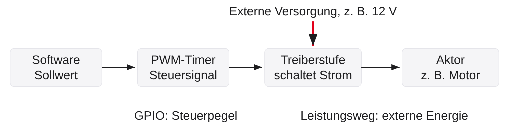
- Ein Kommando transportiert nicht die gesamte Aktorleistung
- Ohne Rückmeldung ist ein Tastverhältnis zunächst offene Steuerung
Zwei Pegel, viele Zeitanteile
- Ideales digitales Signal: LOW \(0\) V, HIGH \(3{,}3\) V
- PWM verändert die Dauer der Pegel, nicht ihre Höhe
- Die ungefilterte Leitung bleibt ein Schaltsignal
- Last und Wahrnehmung entscheiden über die Wirkung
Vom Takt zum Ausgang
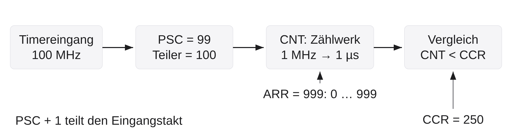
GPT: Zählwerk, Periodengrenze und Vergleich arbeiten ohne Software pro Tick.
Der Vorteiler zählt mit
\[
f_\text{cnt}=\frac{f_\text{tim}}{PSC+1}
\]
| \(100\) MHz |
\(0\) |
\(100\) MHz |
| \(100\) MHz |
\(99\) |
\(1\) MHz |
Bei \(1\) MHz dauert ein Zählintervall \(1\,\mu\)s.
ARR gilt einen vollen Tick
Kleines Up-Counting-Modell mit ARR = 3:
| CNT |
\(0\) |
\(1\) |
\(2\) |
\(3\) |
\(0\) |
\[
N=ARR+1=4,\qquad T=\frac{N}{f_\text{cnt}}
\]
Registerbreite begrenzt den Zählbereich
Ein \(16\)-Bit-Zähler hat \(2^{16}=65536\) Zustände.
\[
T_\text{max}=\frac{65536}{f_\text{cnt}}
\]
- Bei \(100\) MHz: \(0{,}65536\) ms
- Bei \(1\) MHz: \(65{,}536\) ms
- Registerbreite und nutzbare PWM-Auflösung sind verschiedene Größen
Zählmodi und Perioden
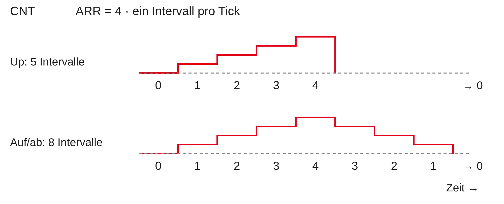
- Up und Down: hier jeweils \(ARR+1\) Intervalle
- Center-Aligned: hier \(2ARR\), ohne doppelte Endpunktintervalle
PWM: gleiche Periode, andere Pulsbreite
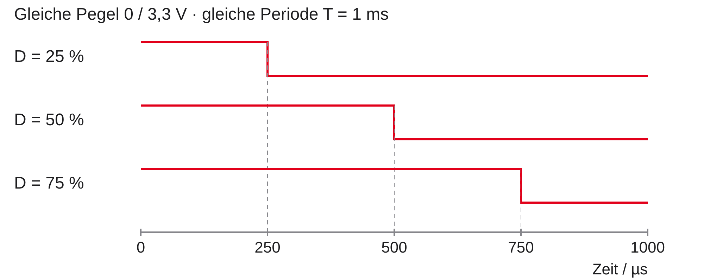
PWM: Pulse Width Modulation, Pulsweitenmodulation.
Periode, Frequenz und Tastverhältnis
\[
f_\text{PWM}=\frac1T,\qquad D=\frac{t_\text{aktiv}}T
\]
Bei Active-High: \(T=1\) ms, \(t_\text{HIGH}=250\,\mu\)s.
\[
f_\text{PWM}=1\ \mathrm{kHz},\qquad D=0{,}25=25\,\%
\]
Das durchgängige Timerbeispiel
\[
f_\text{tim}=100\,\mathrm{MHz},\quad PSC=99,\quad ARR=999
\]
\[
f_\text{cnt}=1\,\mathrm{MHz},\quad N=1000,\quad
f_\text{PWM}=\frac{f_\text{cnt}}N=1\,\mathrm{kHz}
\]
Welcher Registerwert bestimmt die aktive Dauer von \(250\,\mu\)s?
Compare erzeugt den HIGH-Anteil
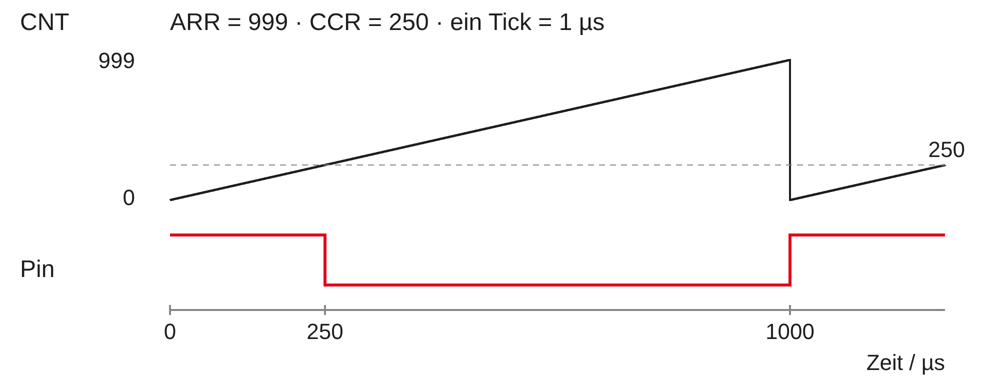
\[
\mathrm{HIGH}\iff CNT<CCR,\qquad D=\frac{CCR}{ARR+1}
\]
Null und hundert Prozent
Für \(N=1000\) Intervalle:
| \(0\) |
\(0\) |
\(0\,\%\) |
| \(250\) |
\(250\) |
\(25\,\%\) |
| \(1000\) |
\(1000\) |
\(100\,\%\) |
Endwerte und darstellbare Compare-Werte in der konkreten Hardware prüfen.
Frequenz ändern, Duty beibehalten
Gleiche Werte ARR = 999 und CCR = 250:
| \(99\) |
\(1\) MHz |
\(1\) kHz |
\(25\,\%\) |
| \(199\) |
\(0{,}5\) MHz |
\(0{,}5\) kHz |
\(25\,\%\) |
HIGH dauert dann \(250\) beziehungsweise \(500\,\mu\)s.
Active-Low ist eine andere Polarität
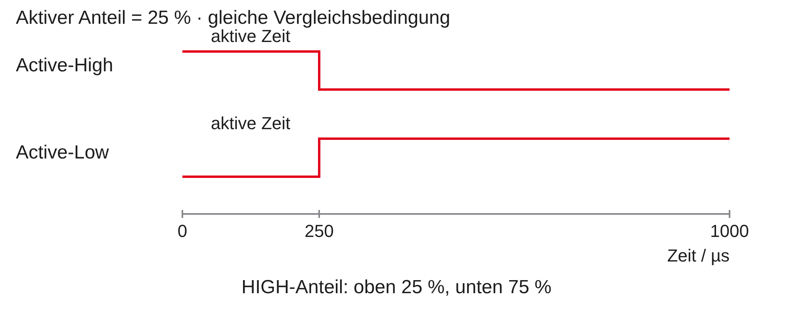
\[
D_\text{HIGH}=
\begin{cases}
D_\text{aktiv} & \text{Active-High}\\
1-D_\text{aktiv} & \text{Active-Low}
\end{cases}
\]
Zeitlicher Mittelwert ist keine neue Pulshöhe
Ideales Rechteck: \(0\) und \(V_H=3{,}3\) V, HIGH-Anteil \(D_H=0{,}25\).
\[
\overline V=D_HV_H=0{,}825\ \mathrm{V}
\]
- Ungefiltert bleiben die Pegel \(0\) und \(3{,}3\) V
- Die Mittelwertzahl beschreibt das Zeitmittel
- Bei Active-Low den tatsächlichen HIGH-Anteil einsetzen
Effektivwert und ohmsche Leistung
Für dasselbe ungefilterte Rechteck:
\[
V_\text{RMS}=V_H\sqrt{D_H}=1{,}65\ \mathrm{V}
\]
Ideale Spannungsquelle, Widerstand \(R=1\) k\(\Omega\):
\[
P=\frac{V_\text{RMS}^2}{R}
=D_H\frac{V_H^2}{R}=2{,}7225\ \mathrm{mW}
\]
RC-Filter: Mittelwert und Restwelligkeit
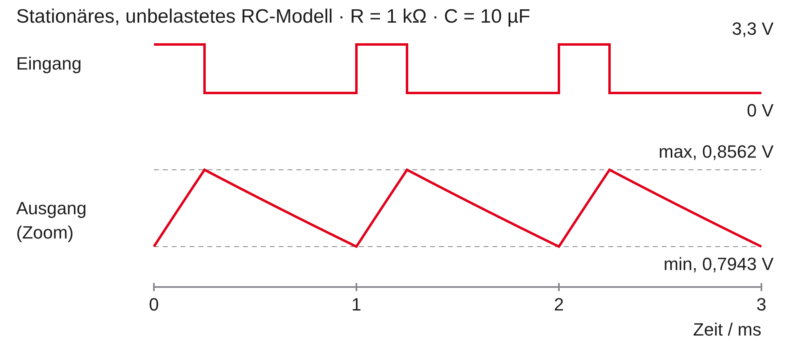
\[
\tau=RC=10\ \mathrm{ms},\qquad f_c=\frac1{2\pi RC}\approx15{,}9\ \mathrm{Hz}
\]
Frequenz und Auflösung konkurrieren
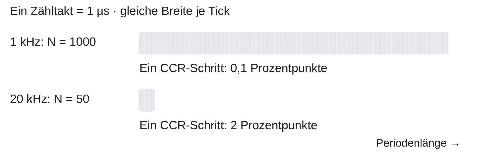
\[
N=\frac{f_\text{cnt}}{f_\text{PWM}},\qquad \Delta D=\frac1N
\]
Eine PWM-Frequenz begründet auswählen
- Last: gewünschter Stromverlauf oder Pulsprotokoll
- Wahrnehmung: Flimmern und Bewegung berücksichtigen
- Timer: erreichbare Frequenz und Compare-Schrittweite
- Treiber: Schaltaufwand und zulässige Betriebsbedingungen
Softwareflanken können verspätet sein
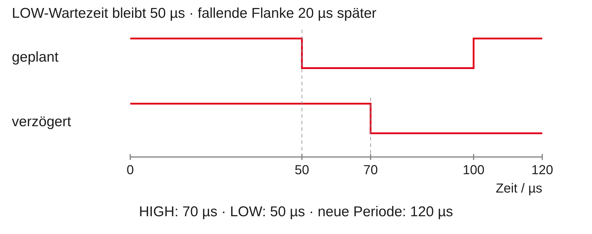
\[
T'=120\,\mu\mathrm{s},\qquad D'=\frac{70}{120}\approx58{,}33\,\%
\]
Hardwarevergleich und echter Pin
- Timerzählwerk und Compare erzeugen den internen Zustand
- Pin-Mux verbindet ihn mit einem Ausgang
- Kanal, Polarität und Timer benötigen passende Freigaben
- Ein laufendes Hardware-Signal ist nicht durch eine ISR pro Flanke erzeugt
Compare-Änderung mitten in der Periode
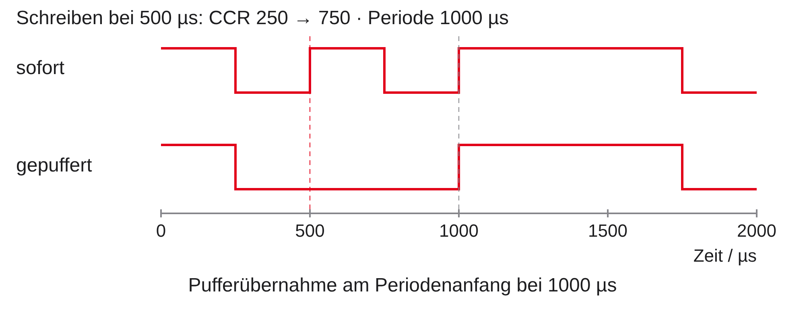
Preload: neuen Wert puffern und am vereinbarten Update-Ereignis übernehmen.
Vor der Ausgangsfreigabe konfigurieren
- Treiber beziehungsweise Ausgang in den vorgesehenen Anfangszustand bringen
- Timer-Takt, Zählmodus und Pinzuordnung einstellen
- PSC, ARR, CCR und Polarität festlegen
- Gepufferte Werte nach dokumentierter Regel übernehmen
- Erst danach Kanal und Ausgang freigeben
Prozentwerte in Compare-Werte umsetzen
C-Lehrfunktion für eine \(16\)-Bit-Periodengrenze:
uint32_t percent_to_ccr(uint32_t percent, uint16_t arr) {
if (percent > 100u)
percent = 100u;
uint32_t n = (uint32_t)arr + 1u;
return (percent * n + 50u) / 100u;
}
ARR = 999: \(0,25,50,100\,\%\) ergeben \(CCR=0,250,500,1000\).
Drei Kanäle, eine Periode
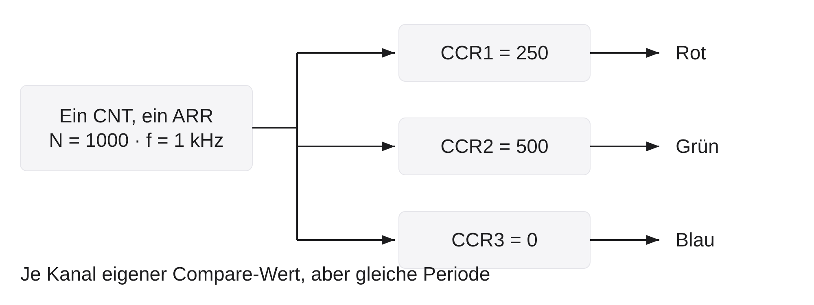
- RGB: Red, Green, Blue, drei Leuchtdiodenzweige
- Separate Strombegrenzung je Zweig
- Gemeinsame Frequenz, unterschiedliche aktive Zeitanteile
Eine Kennlinie ist eine Modellentscheidung
Gewünschter normierter Helligkeitswert \(b\), Lehrkennlinie:
\[
D=b^{2{,}2}
\]
| CCR bei \(N=1000\) |
\(0\) |
\(47\) |
\(218\) |
\(531\) |
\(1000\) |
Servo: Pulsbreite als Kommando
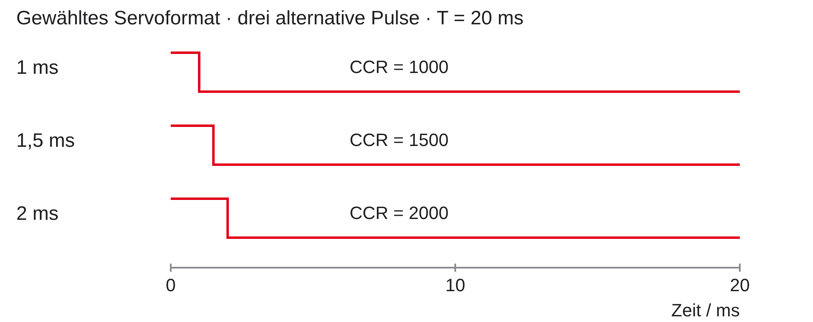
Bei \(1\) MHz Zähltakt: ARR = 19999 und CCR = 1000, 1500, 2000.
Motorstrom braucht eine Treiberstufe
- GPIO liefert den Steuerpegel
- Eine H-Brücke schaltet die externe Motorversorgung
- Induktiver Strom kann auch in einer inaktiven Phase weiterfließen
- Totzeit und Abschaltverhalten gehören zum Treiberentwurf
Gleicher Duty, anderes Anwendungssignal
| LED-Lehrmodell |
aktive Lichtzeit und Strom |
| Servo-Lehrmodell |
Pulsbreite und Wiederholperiode |
| Motor mit Treiber |
Stromverlauf, Versorgung und Last |
Was bedeuten \(7{,}5\,\%\) HIGH bei \(20\) ms gegenüber \(1\) ms Periode?
Sollwertänderung ist langsamer als der Träger
Lehrmodell:
| Hardware-PWM |
\(1\) kHz |
mtime-Zeitquelle |
\(10\) MHz |
| Helligkeitsaktualisierung |
alle \(10\) ms |
Zehn Millisekunden entsprechen \(100000\) mtime-Ticks.
Eine nicht blockierende Fading-Folge
Ein Schritt entspricht \(10\) ms; Berechnung eines linearen Duty-Sollwerts:
uint8_t fade_percent(uint64_t step) {
uint32_t phase = (uint32_t)(step % 200u);
return (uint8_t)(phase <= 100u ? phase : 200u - phase);
}
Schritte \(0,100,200\) ergeben \(0,100,0\,\%\); ein Zyklus dauert \(2\) s.
Was passiert, wenn das Hauptprogramm hängt?
- Bei weiterlaufendem Timer und Takt kann die letzte PWM weiterlaufen
- Neue Sollwerte und andere Arbeit bleiben aus
- Eine laufende ISR beweist nicht Fortschritt der Anwendung
- Überwachung muss den relevanten Fehler tatsächlich beobachten
Der Watchdog überwacht eine Frist
- WDT: Watchdog Timer
- Ein gültiger Feed erneuert die Frist
- Im Basismodell führt Ablauf zu einem Reset
- Verhalten, Takt, Start und Abschaltbarkeit sind plattformabhängig
Die Frist beginnt beim letzten Feed
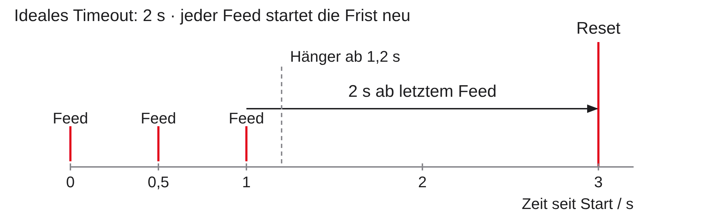
Hänger ab \(1{,}2\) s; nominaler Reset \(1{,}0+2{,}0=3{,}0\) s.
Feed-Ort allein ist kein Gesundheitsnachweis
- Bedingungsloser Feed aus einer Tick-ISR kann einen Hänger verdecken
- Ein Feed in
main ist ebenfalls nicht automatisch richtig
- Erst frische relevante Arbeit und Plausibilität prüfen
- Das Lebenszeichen muss seit dem letzten Feed neu entstanden sein
Fortschritt als Überwachungsrunde
Eine Runde verlangt frische Ergebnisse aus:
- Eingang erfassen und plausibilisieren
- Steuerentscheidung berechnen
- Neue Ausgabe erfolgreich übernehmen
Erst bei allen Meldungen und fälligem Service Feed erlauben; danach eine neue Runde beginnen.
Eigener Takt und Feed-Fenster sind verschieden
| unabhängige Zeitquelle |
Ausfall des überwachten Haupttakts |
| Feed-Fenster |
zu frühe oder zu späte Erneuerung |
Eine Eigenschaft folgt nicht automatisch aus der anderen.
Taktabweichung verändert das Timeout
Lehrmodell: nominal \(T_0=2\) s, tatsächlicher Watchdog-Takt \(\pm20\,\%\).
\[
T_\text{min}=\frac{2}{1{,}2}\approx1{,}667\ \mathrm{s},\qquad
T_\text{max}=\frac{2}{0{,}8}=2{,}5\ \mathrm{s}
\]
Gesunder maximaler Feed-Abstand muss unter dem kürzesten tatsächlichen Timeout liegen.
Ein Fenster erlaubt nicht jeden Feed
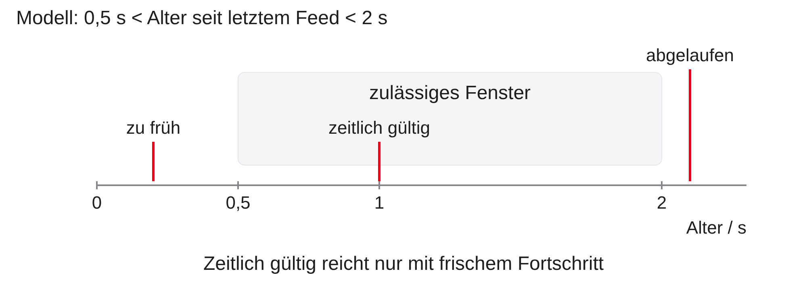
Modellbedingung: \(0{,}5\ \mathrm{s}<t_\text{Alter}<2\ \mathrm{s}\).
Grenzwerte und genaue Aktionen sind im echten Gerät dokumentiert.
Eine prüfbare Feed-Entscheidung
C-Lehrmodell mit exakt bekanntem Alter in Millisekunden:
bool may_feed(uint32_t age_ms, bool fresh_progress) {
return fresh_progress
&& age_ms > 500u
&& age_ms < 2000u;
}
Alter allein reicht nicht; Fortschritt allein reicht ebenfalls nicht.
Reset und Aktorzustand
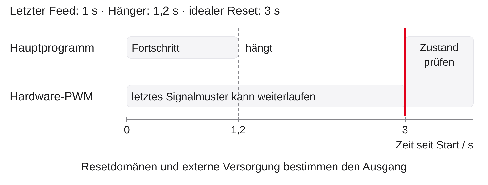
- Erkennung, Abschaltung und Neustart sind getrennte Zeiten
- Eine externe Aktorversorgung wird durch CPU-Reset nicht automatisch getrennt
Nach dem Reset die Ursache auswerten
Konzeptioneller Bootablauf:
- Resetursache gemäß Gerätebeschreibung erfassen
- Ausgang und Treiber in den vorgesehenen Anfangszustand bringen
- Diagnose beziehungsweise Wiederanlaufpolitik anwenden
- Erst nach Vorbereitung normale Ausgabe freigeben
Was ein Watchdog nicht nachweist
- Ein Feed prüft keine beliebige Rechenkorrektheit
- Ein gültiges Fenster erkennt nicht jeden falschen Programmablauf
- Ein Neustart beseitigt nicht automatisch die Ursache
- Funktionale Sicherheit benötigt mehr als diesen Überwachungsbaustein
Optional: Modelle und Geräteausführung trennen
- Host-C: Prozentrechnung, Fading und Feed-Prädikat
- Papier: Timerzustände, Spannungen und Zeitfenster
- Renode: konkrete unterstützte Plattform und Firmware nötig
- Registeradressen und Pinverhalten nicht aus dem Lehrmodell erfinden
Abschlussquiz: Zeitanteile und Überwachung
- Zehn QuizAcademy-Fragen zu Vorlesung 4
- Zehn Minuten beantworten, fünf Minuten auswerten
- Mit Formel, Zählfolge oder Zustand begründen
- Antwortlänge liefert keinen zuverlässigen Hinweis
Was Sie jetzt unterscheiden können
- Timer-Tick, PWM-Periode und Sollwertaktualisierung
- Aktive Zeit, HIGH-Anteil, Mittelwert und Effektivwert
- Gepufferte Änderungen und sofortige Compare-Wirkung
- Frische Fortschrittsrunde und bloßer Feed-Aufruf
- Watchdog-Reaktion und tatsächlicher Aktorzustand